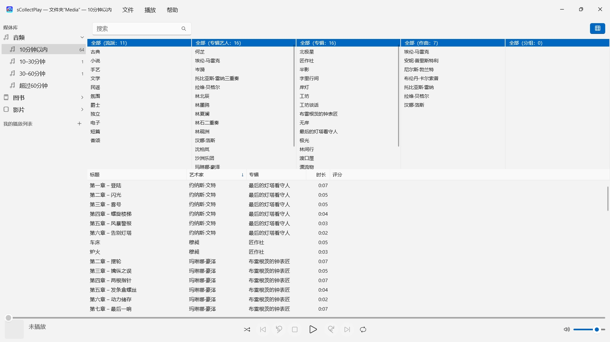
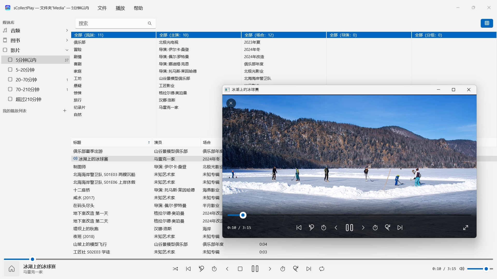

sCollectPlay
选择文件夹即可播放 —— 无需导入，无需拷贝
2026年11月起在 Microsoft Store 上架选择文件夹即可播放：音乐、有声书、播客、电影和电子书自动归类——无需导入，无需账户，也无需云端。也支持 iTunes 媒体库（XML）及其播放列表。


sCollectPlay 就在你的收藏所在之处播放它：任意文件夹、外置硬盘或网络驱动器。选择一个文件夹，音乐、有声书、播客、电影和电子书就会整整齐齐地排在一个列表里 —— 无需导入，无需拷贝，你的文件也不会有任何改动。
24 种语言：英语、德语、捷克语、克罗地亚语、荷兰语、芬兰语、法语、匈牙利语、意大利语、日语、韩语、书面挪威语、波斯语、波兰语、葡萄牙语、罗马尼亚语、俄语、西班牙语、瑞典语、泰语、土耳其语、乌克兰语、中文（简体和繁体）。App 跟随 Windows 的显示语言。
两种来源
- 文件夹：sCollectPlay 会扫描一个文件夹及其子文件夹，直接从文件本身读取标题、艺术家、专辑、流派和时长。多个文件夹可以合并成一个列表。下次启动时会立即显示上次读取的状态，“更新已扫描的文件夹”（Ctrl+R）只读取新增、更改或移除的文件。
- iTunes XML：Windows 版 iTunes 的媒体库，包括播放列表、评分和播放次数。一首曲目是音乐、有声书、播客、电影、剧集还是音乐视频，App 会从 XML 中读取。
整理，但不用你费力
文件夹不会告诉你，一个文件是歌曲还是有声书。因此，sCollectPlay 在扫描时按时长分类：音频分为 10分钟以内、10–30分钟、30–60分钟和超过60分钟，视频则从短片一直到超过三个半小时的电影。这样，歌曲、广播剧单集和有声书就各自分开，你什么都不用设置。电子书和 PDF 由 App 根据文件扩展名识别。
窗口标题栏随时显示当前载入的是什么：哪个文件夹、哪个 XML。
查找
- 按标题、艺术家、专辑、流派等字段搜索 —— 播放列表中也可以
- 按流派、艺术家、专辑、作曲和分组浏览的列浏览器，每列都可以多选。成千上万位艺人也不必无休止地滚动：按首字母分组
- 自由显示或隐藏列，其中包括文件名、数据速率、采样率和大小；列宽和顺序用鼠标拖动即可调整
- 最近使用的文件夹和 XML 文件都列在“文件”菜单中，下次启动时，上一次的来源会再次出现
播放
- 音频播放，带队列、随机播放和重复播放
- 视频在自己的窗口中播放，支持慢动作、逐帧播放、选择音轨和字幕以及全屏
- 大多数格式 Windows 可以自己播放 —— MP3、AAC、FLAC、OGG、Opus、WMA，以及 MP4、MKV、AVI、WMV 和 MPG。Windows 不认识的格式，例如 AIFF、DSD 或 FLV，App 会交给 Windows 中为该文件类型设置的程序 —— 例如 VLC
- 自建播放列表和智能播放列表
- 任何播放列表都可以连同其文件导出为一个带 M3U8 列表的文件夹 —— 导出到 SD 卡、U 盘或某个文件夹，例如供 Android 设备上的 VLC 使用
你的文件保持原样
sCollectPlay 不写入标签，不更改元数据，也不删除任何东西。
在你的 PC 上，也仅在那里
没有账户，没有云，没有分析，没有广告。App 只访问你交给它的文件夹。每种语言都配有完整的帮助文档。
sCollectPlay Lite · 免费 — sCollectPlay 的精简版：直接打开文件夹、iTunes XML 或 sCollect 媒体库，播放其中的音乐、电影、有声书和播客——支持播放列表、音轨和字幕轨道、慢动作播放和逐帧步进。每次会话只能使用一个来源；分栏浏览器、自定义播放列表和最近使用的来源仅限完整版。
- 需要 Windows 11 或更高版本
- 支持 24 种语言
- 技术支持： SwiftAppsBavaria@gmx.net
- sCollectPlay 和 sCollectPlay Lite 隐私政策